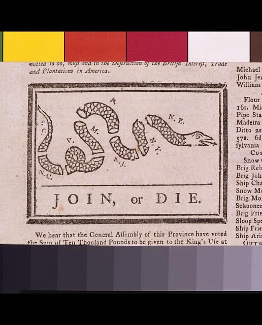

Directions: Read the full text, then answer the questions at the end.
By 1750 the Ohio Valley was claimed at once by three peoples who meant different things by the claim. The Ohio nations, Delaware, Shawnee, and Mingo among them, lived there, hunted there, and had kept their country for two generations by playing France against Britain, trading with both and obeying neither. Virginia claimed it by charter and by its speculators' paper grants. France claimed it as the link between Canada and Louisiana and was binding the claim with a chain of forts from Lake Erie to the Forks of the Ohio. The Ohio nations' balance held only while both empires needed their friendship more than their land. By 1753 both empires wanted the ground itself, and the balance began to break.
The opening belonged to a young Virginia officer. In 1753 Governor Robert Dinwiddie sent Major George Washington, twenty one years old, to order the French commandant on the Ohio to withdraw. The French refused politely, and Washington's journal of the journey, published at Williamsburg in 1754, told the colonies how well the Forks of the Ohio would hold a fort. In May 1754 Washington, guided by the Seneca leader Tanacharison, ambushed a French party and killed its commander, Joseph Coulon de Jumonville. Expecting the answer, he threw up a small stockade at Great Meadows and named it Fort Necessity. On July 3 a larger French force attacked in the rain, and Washington surrendered the fort and signed a capitulation written in French, a language he could not read. The document spoke of Jumonville's death as an assassination. Washington had admitted, on paper, what he believed he had denied.

That same summer, delegates from seven colonies met at Albany to answer the crisis together. Benjamin Franklin proposed his Plan of Union, one general government for defense and for relations with Indigenous nations, under a president general appointed by the Crown and a grand council chosen by the assemblies. The congress adopted the plan. Every colonial assembly then rejected it, unwilling to surrender its own powers, and the Crown let it drop. The war went forward unled by any union. In July 1755 General Edward Braddock marched two regiments toward Fort Duquesne and was ambushed on the Monongahela. Braddock was killed and his army destroyed. For two years after, French and Indigenous raiders struck the frontiers of Pennsylvania, Virginia, and Maryland, and by the estimates historians draw from the records, thousands of settlers were killed or carried into captivity.
The turn came when William Pitt took direction of the war in 1757. Pitt borrowed millions to pay for victory, sent Britain's regular regiments and its navy to North America in force, promoted officers by merit, and promised the colonies repayment for the men and money their assemblies voted. Colonial soldiers served in large numbers beside the regulars, and colonial assemblies funded and supplied their own regiments. Louisbourg fell in 1758. In September 1759 General James Wolfe's army climbed to the Plains of Abraham outside Quebec and won the battle in which both Wolfe and the French commander, the Marquis de Montcalm, were killed. Montreal surrendered in 1760, and Canada was Britain's, three years before the peace was signed.
The North American war was one theater of a worldwide struggle, the Seven Years' War, in which Britain and Prussia fought France, Austria, and their allies across Europe, the Caribbean, Africa, and Asia. Inside the victory, the allies' experiences divided. Indigenous nations that had backed France lost the counterweight their diplomacy had depended on, and British officers who had once courted them now treated gifts and trade as expenses to cut. Colonial soldiers who had served beside regulars learned British competence at close range, and also British contempt for provincial troops. Colonial assemblies, courted by Pitt and repaid by London, had voted their own men and money for the cause.
The Treaty of Paris, signed on February 10, 1763, wrote the victory onto the map. France ceded Canada and every French claim east of the Mississippi River to Britain, keeping only New Orleans on the mainland, and France's Louisiana west of the river went to Spain. Britain also took Florida from Spain. No Indigenous nation sat at the table in Paris, and no clause asked the peoples who lived in the ceded country whether they accepted the transfer. On paper two empires had divided a continent. On the ground, the Ohio and Great Lakes nations held their land still, and read the treaty as a French surrender of something France had never owned.
The victory's costs reached everyone in the same year. Britain's national debt had nearly doubled during the war, and its ministers resolved that the colonies, defended at such expense, should pay toward their own defense. In the spring of 1763 the Ohio and Great Lakes nations rose under leaders including the Ottawa chief Pontiac, struck British forts across the interior, and took most of them within weeks, fighting to keep their country now that the French counterweight was gone. London answered in October with the Proclamation of 1763, forbidding colonial settlement west of the Appalachian Mountains and reserving that country for Indigenous peoples, a line settlers were already crossing. In 1763 Britain and its colonies had never been stronger together, and every term of their partnership, money, land, and authority, was about to be renegotiated. The next unit takes up the renegotiation.
1. Name the three claimants to the Ohio Valley by 1750, and state what the Ohio nations' diplomacy had been designed to protect.
2. Trace Washington's part in the war's opening, from his 1753 mission to the capitulation of July 1754, and state what the capitulation's French wording made him appear to admit.
3. State what Franklin's Albany Plan proposed, who rejected it, and what happened to Braddock's army in July 1755.
4. State three things Pitt changed after 1757, and state what fell in 1758, what was won in September 1759, and what surrendered in 1760.
5. In a short paragraph, answer the lesson question from the reading. Name how Britain won, and name one cost of the victory for Britain, one for the colonies, and one for the Ohio and Great Lakes nations, each with a dated fact.
1. Name the three claimants to the Ohio Valley, and state what the Ohio nations' diplomacy protected. The claimants were the Ohio nations themselves, Delaware, Shawnee, and Mingo among them, who lived and hunted in the valley; Virginia, claiming by charter and its speculators' paper grants; and France, claiming the valley as the link between Canada and Louisiana and binding the claim with forts. The Ohio nations had played France against Britain for two generations, trading with both and obeying neither. Their diplomacy protected their country, their land and independence, and it held only while both empires needed their friendship more than their land.
2. Trace Washington's part in the war's opening, and state what the capitulation made him appear to admit. In 1753 Governor Dinwiddie sent the twenty one year old Major Washington to order the French commandant on the Ohio to withdraw; the French refused politely, and Washington's published journal advertised the Forks of the Ohio as a fort site. In May 1754, guided by the Seneca leader Tanacharison, Washington ambushed a French party and killed its commander, Jumonville. He built Fort Necessity at Great Meadows, and on July 3, 1754 a larger French force attacked in the rain and he surrendered. The capitulation he signed was written in French, which he could not read, and it described Jumonville's death as an assassination. On paper Washington had admitted a killing he believed he had denied.
3. State what the Albany Plan proposed, who rejected it, and what happened to Braddock's army. Franklin's Plan of Union proposed one general government for the colonies, for defense and for relations with Indigenous nations, administered by a president general appointed and supported by the Crown and a grand council chosen by the colonial assemblies. The Albany Congress adopted it in the summer of 1754. Every colonial assembly then rejected it, unwilling to surrender its own powers, and the Crown let it drop. In July 1755 General Edward Braddock marched two regiments toward Fort Duquesne and was ambushed on the Monongahela; Braddock was killed and his army destroyed, and frontier raids followed for two years.
4. State three things Pitt changed after 1757, and the sequence of 1758 to 1760. Any three, accurately stated. Pitt borrowed millions to pay for the war; he sent Britain's regular regiments and its navy to North America in force; he promoted officers by merit; and he promised the colonies repayment for the men and money their assemblies voted, which brought colonial soldiers and colonial funding into the war in large numbers. Louisbourg fell in 1758. Quebec was won in September 1759 on the Plains of Abraham, where both Wolfe and Montcalm were killed. Montreal surrendered in 1760, and Canada was Britain's three years before the peace was signed.
5. Answer the lesson question from the reading. Accept any answer that states the winning and distributes the costs with dates. How Britain won: Pitt's direction from 1757, borrowed millions, regulars and the navy in force, colonial soldiers beside them and assemblies voting men and money, then Louisbourg in 1758, Quebec in 1759, and Montreal in 1760, written into the Treaty of Paris of February 10, 1763. Cost to Britain: a debt nearly doubled, with ministers resolving that the colonies should pay toward their own defense. Cost to the colonies: the Proclamation of October 1763 closing the west many had fought expecting to enter. Cost to the Ohio and Great Lakes nations: the French counterweight lost, exclusion from the treaty that transferred their country on paper, and the war they fought under Pontiac and other leaders in the spring of 1763 to keep it.